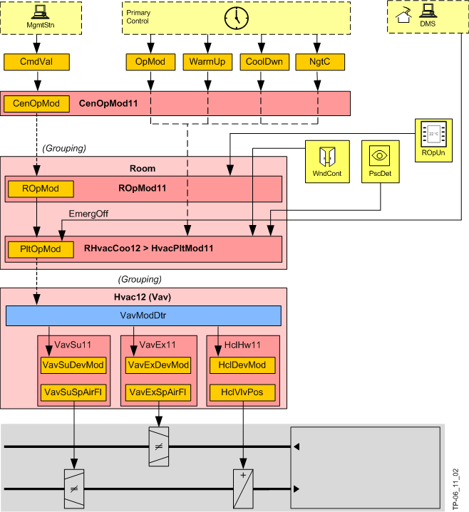

房间、工厂和设备的操作模式
Overview (using a VAV application as an example)

Central operating mode (CenOpMod)
输入是来自 BACnet 客户端或初级级别的命令（调度程序或预热 (WarmUp)、冷却 (CoolDwn) 或夜间冷却 (NgtC) 的请求）。 CenOpMod11 作为集团管理者确定中央操作模式 (CenOpMod)，并以此方式包括建筑物的占用和房间的使用。
Room operating mode (ROpMod)
房间操作模式 (ROpMod) 在 ROpMod11 中确定。中央功能默认的操作模式可以通过设置为定义状态的本地存在按钮（PscBtn，可选）在房间中覆盖。生成的房间操作模式 (ROpMod) 适用于房间，包括设备。
Plant operating mode
由此产生的房间操作模式 (ROpMod) 可以被暖机 (WarmUp)、降温 (CoolDwn) 或夜间制冷 (NgtC) 的中央请求覆盖。
由此产生的操作模式称为工厂操作模式 PltOpMod。
此外，中央保护、优化、服务和应急功能作用于房间并超越工厂运行模式。
IF | THEN* | |||||
|---|---|---|---|---|---|---|
房间运行模式 | 存在探测器 | 窗口接触 | 夜间降温 | 预冷 | 预热 | 工厂运行模式 |
ROpMod | PscDet | WndCont | NgtC | CoolDwn | WarmUp | PltOpMod |
-- | -- | 打开 | -- | -- | -- | Protection |
Protection | -- | 关闭 | -- | -- | -- | Protection |
Economy | -- | 错误的 | 错误的 | 错误的 | Economy | |
| 真的 | 真的 | 错误的 | Night cooling | ||
-- | -- | -- | 真的 | Warm-up | ||
-- | -- | 真的 | 错误的 | Cool down | ||
Pre-Comfort | -- | -- | 真的 | -- | Cool down | |
-- | -- | 错误的 | -- | Pre-Comfort | ||
占领 | -- | -- | -- | Comfort | ||
无人居住 | -- | 错误的 | -- | Pre-Comfort | ||
-- | 真的 | -- | Cool down | |||
Comfort | -- | -- | -- | -- | Comfort | |
占领 | -- | -- | -- | Comfort | ||
无人居住 | -- | 错误的 | -- | Pre-Comfort | ||
-- | 真的 | -- | Cool down | |||
* 最终的工厂运行模式取决于配置。
Device operating mode
根据房间运行模式（舒适、经济等），每个设备都分配有一个设备运行模式（DevOpMod）（控制、全开、全关、关闭）。
这发生在温度控制 AF 中，Room programming编辑器图表“VavDevModDtr”，即下表是固定编程的。
控制模式意味着 RHvacCooxx 中的温度控制控制设备（调制或 2 点）。其余状态由 AF Hvacxx 段提供。
用于控制聚合和组件的设备操作模式 (DevMod) 可接受以下状态（示例：VAV）：
IF | 然后设备操作模式... (DevMod) | |||||||
|---|---|---|---|---|---|---|---|---|
空气处理 | 热/cooling辐射 | |||||||
工厂运行模式(PltOpMod) | VAV 供气 | Vav 抽气 | 冷却盘管 | 加热/冷却盘管 | 加热线圈 | 天花板供暖/冷冻天花板 | 散热器 | |
1 | Off | Off | Off | Closed | Closed | Closed | Closed | Closed |
2 | Protection | 控制 | 控制 | 控制 | 控制 | 控制 | 控制 | 控制 |
3 | Economy | 控制 | 控制 | 控制 | 控制 | 控制 | 控制 | 控制 |
4 | Pre-Comfort | 控制 | 控制 | 控制 | 控制 | 控制 | 控制 | 控制 |
5 | Comfort | 控制 | 控制 | 控制 | 控制 | 控制 | 控制 | 控制 |
6 | Warm-up | 控制 | 控制 | 控制 | 控制 | 控制 | 控制 | 控制 |
7 | Cool down | 控制 | 控制 | 控制 | 控制 | 控制 | 控制 | 控制 |
8 | Room low temperature protection | Max flow | Control | Off | Fully open heat | Fully open | Fully open heat | Fully open |
9 | Not used | Off | Off | Closed | Closed | Closed | Closed | Closed |
10 | Free cooling | 控制 | 控制 | 控制 | 控制 | 控制 | 控制 | 控制 |
11 | Night cooling | 控制 | 控制 | Closed | Closed | Closed | Closed | Closed |
12 | Ventilation | Max flow | 控制 | 控制 | 控制 | 控制 | 控制 | 控制 |
13 | Not used | Off | Off | Closed | Closed | Closed | Closed | Closed |
14 | Air volume flow off | Off | Off | Closed | Closed | Closed | 控制 | 控制 |
15 | Smoke extraction positive pressure | Special flow | Off | 控制 | 控制 | 控制 | 控制 | 控制 |
16 | Smoke extraction negative pressure | Off | Special flow | Closed | Closed | Closed | 控制 | 控制 |
17 | Purge | Max flow | Control | 控制 | 控制 | 控制 | 控制 | 控制 |
仅粗体字的值由Room programming编辑器图表“VavDevModDtr”。
Free cooling
即使房间操作模式不是舒适，此设备操作模式也会使用冷冻水将房间冷却至舒适设定点。如果主设备有冷冻水，则可以“自由”冷却（使用外部冷空气）。
房间内的条件是：
- Free cooling (FreeCAvl) is available in refrigeration generation.
- Chilled water temperature (FreeCTChw) is below 20 °C or 68 °F.
- The average room temperature (all rooms for this group) is above 23 °C or 73.4 °F.
有关详细信息，请参阅 AF SplyChw11。
Night cooling
该设备操作模式使用冷却外部空气来冷却房间。主工厂向组成员房间发送“夜间制冷请求”(NgtCRequ)。
夜间制冷是否有意义且节能的决定是由主空气处理机组决定的。主工厂和房间自动化之间的各种协调信号：
- Switch on the fans.
- Set the mixed air dampers to 100% outside air.
- Lock all other equipment including heating coils, cooling coils, humidifier.
- Set the VAV boxes in the room to a defined value.
夜间冷却仅在以下条件下发生：
- The room is vacant (Economy or Protection).
- The outside temperature is above an adjustable setpoint (9 °C or 48.2 °F).
- The temperature difference to cooling is sufficiently large, i.e. room temperature - outside temperature > 7 K / 12.6 °F.
- The temperature deviation from room temperature and temperature setpoint is sufficiently large, i.e. room temperature > room setpoint + 2 K / 3.6 °F.
Frost protection
“低室温保护”计划在工厂运行模式的枚举中（8 个 VAV 盒处于控制模式，所有热源位于 100%），但未被任何 AFs 使用。如果需要房间防冻保护，则必须创建特定于该项目的房间编程表，并使用室温下限和上限来命令和释放该设备操作模式。
Fire and smoke extraction
DANGER

Desigo Room Automation 不是危险管理系统！
火灾和排烟功能设计不当可能导致受伤。
- Use only properly trained personnel for engineering and commissioning!
如果发生火灾或排烟，中央紧急功能 HVAC (CenEmgHvac) 或本地火灾探测器或排烟开关将起作用。送风箱和/or排风箱和VAV箱部署到指定位置。
- In case of fire: The entire room including the devices is switched to emergency mode EmgOff.
In this operating mode, manual interventions via BACnet clients as well as switch-on and off delays, are no longer permitted. - Smoke extraction: The emergency operating modes overpressure, under pressure, or purge act via a higher priority on the plant operating mode (PltOpMod) and thus on individual devices.
Operating modes and prioritization
以下概述显示了写入各种操作模式的源（优先级）。